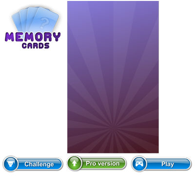

What is simple-layout-js?
 simple-layout-js is a lightweight yet powerful generic layout engine for canvas based games and apps. The engine will help you fit your game/app to any device resolution, it uses percent based width and height.
simple-layout-js is a lightweight yet powerful generic layout engine for canvas based games and apps. The engine will help you fit your game/app to any device resolution, it uses percent based width and height.
The final result
In this tutorial I will show you how to create a welcome screen with a menu for a memory game.
You can view the live result
here
Resize the browser window to see how Simple-Layout deals with any given size.
Lets begin
Let's start by creating our index.html:
<!doctype html>
<html>
<head>
<style>
body {
margin: 0; padding: 0;
width: 100%; height: 100%;
}
canvas {
display: block; position: absolute;
top: 0; left: 0; right: 0; bottom: 0;
width: 100%; height: 100%;
}
</style>
</head>
<body>
<canvas></canvas>
<script src="scripts/pixi.js"></script>
<script src="scripts/simple-layout-js.js"></script>
<script src="scripts/simple-layout-for-pixijs.js"></script>
<script src="scripts/atlas.js"></script>
<script src="scripts/main.js"></script>
</body>
</html>Few notes about this index.html file
- I've used css to make the canvas fit the entire window all the time.
- Loading pixi.js, simple-layout-js.js, and simple-layout-for-pixijs.js because we are using PixiJs
- I'm also loading a atlas.js that we will see next
- And the main.js that will contain the pixi initialization and our layout definition.
The atlas image
For the menu we'll need a background, logo, and three buttons. here's the atlas image:
The atlas.js
To make things simple, I've created a global variable atlasJson with the value of the atlas json.
var atlasJson = {'frames': {
'Logo.png': {
'frame': {'x': 4, 'y': 4, 'w': 345, 'h': 287},
'rotated': false,
'trimmed': false,
'spriteSourceSize': {'x': 0, 'y': 0, 'w': 345, 'h': 287},
'sourceSize': {'w': 345, 'h': 287}
},
'background.png': {
'frame': {'x': 353, 'y': 4, 'w': 480, 'h': 800},
'rotated': false,
'trimmed': false,
'spriteSourceSize': {'x': 0, 'y': 0, 'w': 480, 'h': 800},
'sourceSize': {'w': 480, 'h': 800}
},
'challengeButton.png': {
'frame': {'x': 4, 'y': 808, 'w': 337, 'h': 108},
'rotated': false,
'trimmed': false,
'spriteSourceSize': {'x': 0, 'y': 0, 'w': 337, 'h': 108},
'sourceSize': {'w': 337, 'h': 108}
},
'getProButton.png': {
'frame': {'x': 345, 'y': 808, 'w': 330, 'h': 102},
'rotated': false,
'trimmed': false,
'spriteSourceSize': {'x': 0, 'y': 0, 'w': 330, 'h': 102},
'sourceSize': {'w': 330, 'h': 102}
},
'playButton.png': {
'frame': {'x': 679, 'y': 808, 'w': 337, 'h': 107},
'rotated': false,
'trimmed': false,
'spriteSourceSize': {'x': 0, 'y': 0, 'w': 337, 'h': 107},
'sourceSize': {'w': 337, 'h': 107}
}},
'meta': {
'image': 'atlas.png',
'format': 'RGBA8888',
'size': {'w': 1024, 'h': 1024},
'scale': '1'
}
};Initialize pixi.
Here we'll initialize pixi, and give it our canvas, the canvas that will always fill the entire window.
var stage = new PIXI.Stage(0xFFFFFF);
var canvas = document.getElementsByTagName('canvas')[0];
var renderer = PIXI.autoDetectRenderer(800, 600, {view:canvas});Fit the renderer to the window size.
In the previous part we've initialized pixi and the renderer with the size of 800x600, this will be irrelevant because here we will be listening to the window resize event, and resize the renderer to the window size.
function fitRendererToWindow() {
var windowWidth = document.documentElement.clientWidth || 800;
var windowHeight = document.documentElement.clientHeight || 600;
renderer.resize(windowWidth, windowHeight);
// ask Pixi to draw the stage
renderer.render(stage);
}
window.addEventListener('resize', fitRendererToWindow);Creating the layout.
So far we've done nothing special, it's a pixi html page that has a dynamic width and height.
Now we will use the simple layout to construct the game menu.
function createLayout() {
// creating the layout
var rootContainer = new SimpleLayout.LayoutContainer();
var mainContainer = new SimpleLayout.LayoutContainer();
var buttonsContainer = new SimpleLayout.LayoutContainer();
var background = new SimpleLayout.LayoutItem();
background.assetId = 'background.png';
background.fillArea = true;
buttonsContainer.addNewLayoutItem('playButton.png');
buttonsContainer.addNewLayoutItem('challengeButton.png');
buttonsContainer.addNewLayoutItem('getProButton.png');
buttonsContainer.layout = new SimpleLayout.layout.VerticalLayout();
var logoLayoutItem = new SimpleLayout.LayoutItem();
logoLayoutItem.requestedHeightPercent = 0.4;
logoLayoutItem.assetId = 'Logo.png';
mainContainer.addLayoutItem(logoLayoutItem);
mainContainer.addLayoutItem(buttonsContainer);
mainContainer.layout = new SimpleLayout.layout.VerticalLayout();
mainContainer.layout.paddingLeft = 0.2;
mainContainer.layout.paddingRight = 0.2;
mainContainer.layout.paddingTop = 0.1;
mainContainer.layout.paddingBottom = 0.1;
mainContainer.layout.gap = 0.1;
rootContainer.layout = new SimpleLayout.layout.BasicLayout();
rootContainer.addLayoutItem(background);
rootContainer.addLayoutItem(mainContainer);
return rootContainer;
}We've created few LayoutContainers that will hold the layout, each with its own layout object (BasicLayout, and VerticalLayout).
We've also created the LayoutItems.
LayoutItems are the actual visual items, you can see that we've given them each an assetId.
This assetId is what simple-layout-js will use to create the asset using an assetsFactory (We will see that next)
The layout that I've created is constructed using a root container that have two children, a background and the main container. Both will consume all the area that was given to them because I've given it a BasicLayout.
The main container uses a VerticalLayout (With some padding) to vertically layout his two children, the logo (That requested 40% of the height) and the buttons container (That will take the rest of the height).
The buttons container also uses the VerticalLayout and it holds all three buttons that will split the height evenly.
There are many ways to layout your screens, be sure to checkout The full API of simple-layout-js to get the most out of it.
Creating the assets.
As you saw before, when I created the LayoutItems I gave them an assetId, simple-layout-js also comes with asset factories to create all these assets for you. simple-layout-js comes with few implementations of asset factories. You can also created your own if you wish.
In this tutorial I will be using the AtlasAssetsFactory_PixiJS to create Pixi assets from the atlas that we declared before.
var assetsFactory = new SimpleLayout.PixiJSImpl.AtlasAssetsFactory_PixiJS({atlasImageUrl:'images/atlas.png', atlasJson:atlasJson});
var gameScreen;
function onAssetsLoaded()
{
// creating the game layout
gameScreen = createLayout();
// asking SimpleLayout to go over all the children and create the assets using the provided factory
SimpleLayout.LayoutAssetsFactory.createAssets(gameScreen, assetsFactory);
// After creating the real Pixi assets (Concrete Display Objects)
// Add the the root parent to the stage
stage.addChild(gameScreen.displayObject.getConcreteDisplayObject());
fitCanvasToWindow();
}
// load the assets
assetsFactory.loadAssets(onAssetsLoaded);Render the layout on window resize.
The last step is to make sure that we execute the layout on window resize. Add the following code to the fitRendererToWindow function. (Before the render)
if (gameScreen) {
// execute the layout for the current renderer size
gameScreen.fitInto(renderer.width, renderer.height);
}We're done!
As you can tell, most of this tutorial covered the construction of a pixi html page, and in the last part we've actually used simple-layout-js.
With one simple function I was able to fit to any window size, and forget about it. There are many solutions to this problem but simple-layout-js covers it all in the most simple way.
You can find more tutorials here.
The editor.
Simple Layout also have a WYSIWYG editor that will save you the time and effort of defining your layout in code. The editor can export a json that can be imported into simple-layout in one line.
Give it a try!